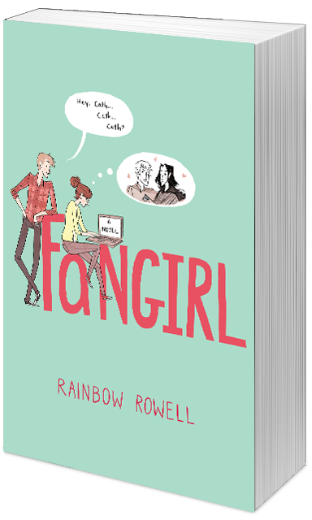

Fangirl
La novela Fangirl de Rainbow Rowell fue publicada en 2013, siendo su idioma original el inglés. Trata sobre dos gemelas: Cath y Wren. Durante muchos años ellas hicieron todo juntas: compartían cuarto, ropa y, lo más importante, su obsesión por la saga de libros de Simon Snow. Sin embargo, las cosas cambian cuando se van a la universidad. Wren decide que no quiere compartir más el cuarto con Cath; quiere empezar de nuevo y conocer gente. Cath no coincide con su hermana, ella estaba bien con seguir igual que todos estos años. Para ella es muchísimo peor la decisión de su gemela, dado a que es increíblemente tímida y tiene una ansiedad creciente. Su único consuelo es escribir fanfiction de Simon Snow, donde puede expresarse libremente y se siente a gusto.
Estando fuera de su zona de confort, Cath debe lidiar con una compañera de cuarto antipática, un compañero de clase que solo quiere saber sobre escritura, un chico que no puede leer atentamente, y su profesora de literatura, la cual piensa que el fanfiction no es nada más que plagio (un concepto que va muy en contra de Cath). Además, debe estar constantemente atenta a su padre, quien es psicológicamente inestable (es un amor y súper atento, pero nunca estuvo realmente solo por este mismo tema).
Cath deberá aprender a salir de su zona de confort, para enfrentarse al mundo exterior.
Es un muy buen libro para entender qué se siente ser una fangirl. Si les gusta Harry Potter, estuvieron por más de dos días seguidos en internet, tienen un blog de Tumblr, leyeron o escribieron fanfiction, este libro es para ustedes. Si no lo hicieron y simplemente quieren comprender el mundo de los fans, les recomiendo este libro.
Pueden conseguirlo en librerías como Yenny, lo podes pedir por Amazon o lo podes conseguir por alguna de las librerías de Av. Corrientes, en Buenos Aires (o casi cualquier librería del país).